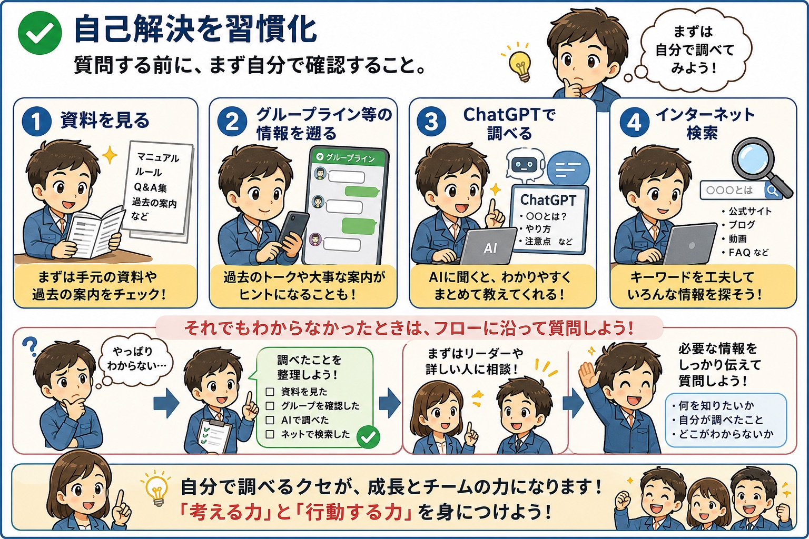
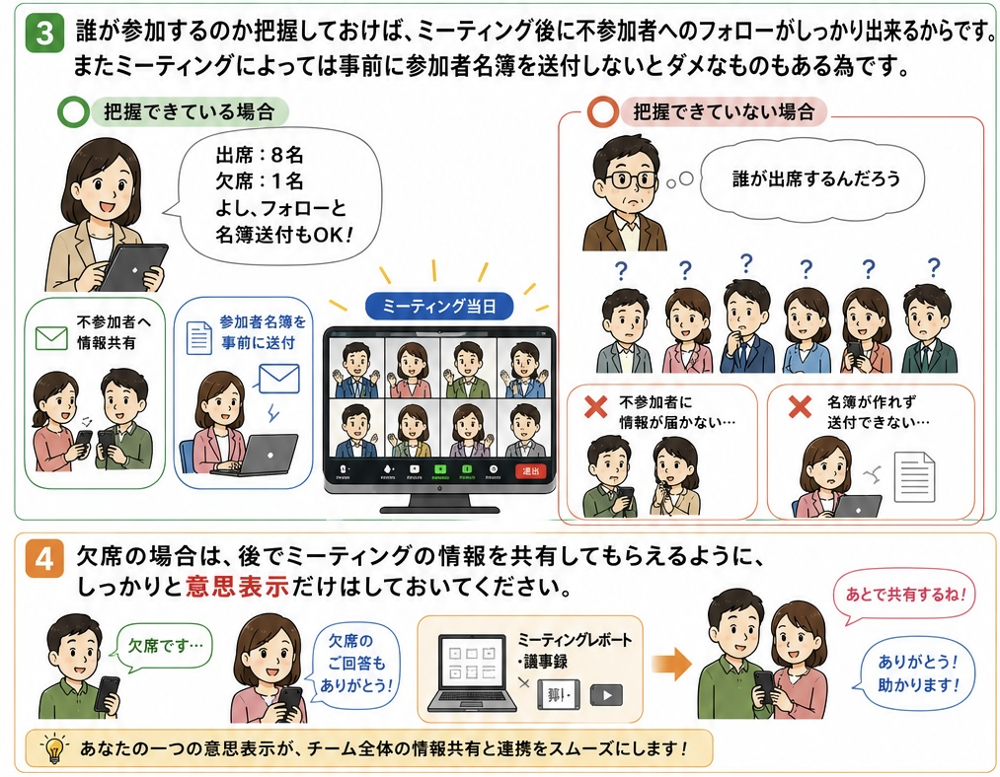
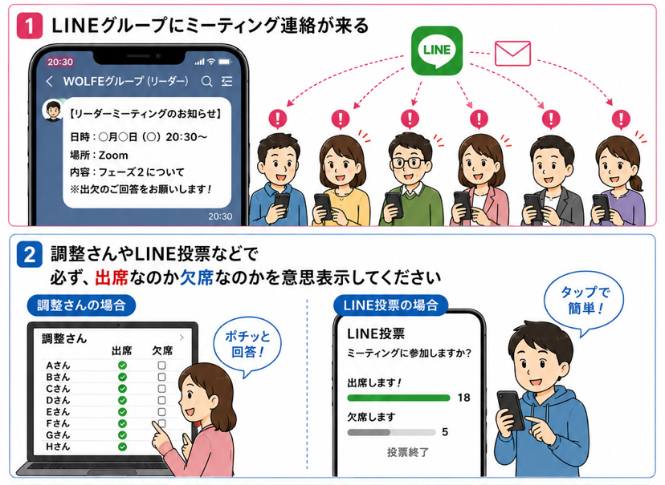

7月31日
西濱SDリーダーミーティング議事録
7月31日に開催された西濱SDリーダーミーティングの共有内容です。画像を上から順番に確認してください。
1. 本部からのお知らせ
まずは、組織方針と運営ルールの共有事項です。未確定情報の拡散禁止、本社への直接問い合わせ禁止、決定事項のみ共有することを確認してください。

2. 自己解決力を習慣化
質問する前に、まずは自分で調べること。資料、グループライン、ChatGPT、インターネット検索を活用して、確認する習慣をつけましょう。

3. 出欠は必ず回答する
ミーティング案内が来たら、調整さんやLINE投票などで、必ず「出席」か「欠席」かの意思表示をしてください。

4. なぜ出欠確認が必要か
参加者を把握できれば、不参加者へのフォローや参加者名簿の送付がスムーズになります。欠席の場合も、あとで情報共有を受けられるよう、意思表示だけは必ず行ってください。
